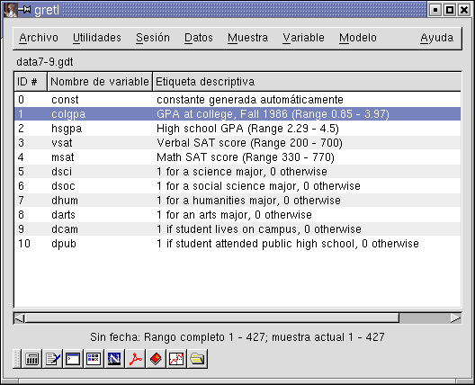
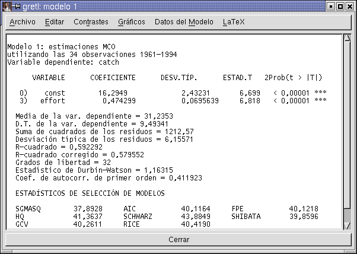
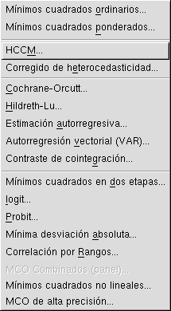
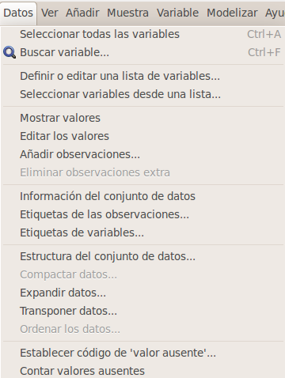
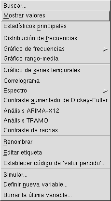
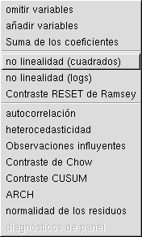

La ventana principal, con detalles sobre el conjunto de datos actual:
(nota del traductor: lo siento los descriptores de los datos de gretl aún no están traducidos)

Ventana de resultados de un modelo:

Ventana del visualizador de bases de datos, mostrando los datos de tipos de interés de la Reserva Federal.
El editor de datos incluído en gretl:
La ventana de ayuda:
Una ventana de gráfico, que muestra un contraste de normalidad sobre una serie de datos:
Varios menús:
| Menú de modelos: elección de los estimadores |  |
| Menú de datos: Operaciones respecto al conjunto de datos completo |  |
| Menú de variable: Operaciones sobre variables individuales |  |
| Menú de contrastes: disponible después de estimar un modelo |  |
Volver a la página principal de gretl.